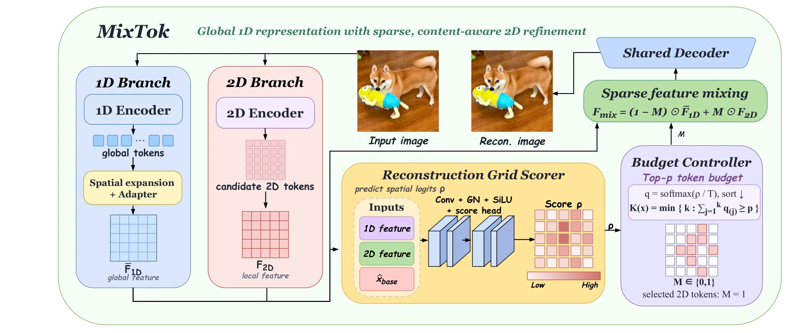
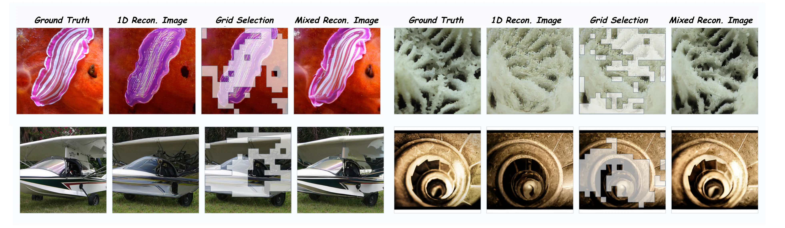
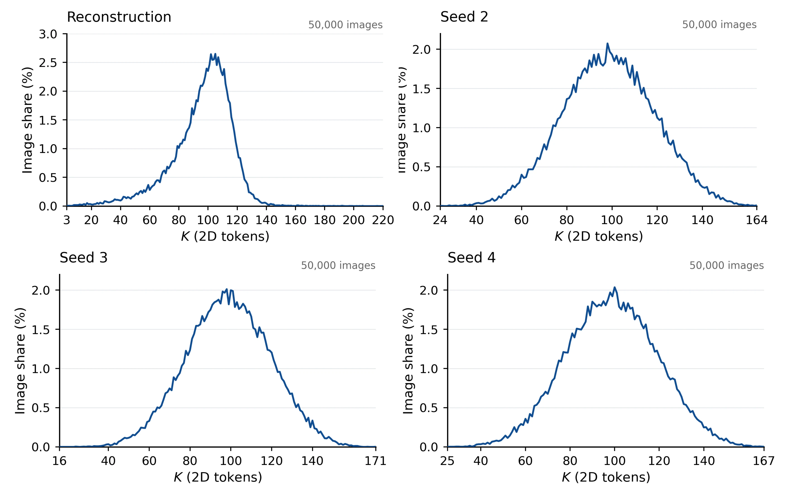

Abstract
Efficient visual tokenization requires compact representations without losing fine-grained image content. Dense grid tokenizers allocate capacity uniformly, while short 1D token sequences capture global structure but can miss local detail. MixTok combines both: a compact 1D representation is expanded into a base feature grid, and a content-adaptive router selects how many 2D tokens to retain and where to place them. Selected 2D features replace the corresponding base features before a shared decoder reconstructs the image.
The same representation supports two-stage masked generation. A 1D MaskGIT first generates global tokens; a distilled grid scorer chooses the sparse refinement set; a 2D MaskGIT then generates local tokens using continuous spatial context from the base representation. On ImageNet 256×256, MixTok reaches an rFID of 1.195 and a gFID of 1.9511 with average budgets of roughly 128 and 131 content tokens.
Method
Reconstruction overview

- Global base. A short 1D token sequence is spatially expanded and aligned with the shared decoder’s feature space.
- Adaptive routing. A grid scorer ranks candidate positions; top-p selection jointly determines the locations and per-image token count.
- Local refinement. Selected 2D token features replace the aligned base features, and the shared decoder renders the mixed grid.
Two-stage masked generation

Results
MixTok is evaluated on ImageNet 256×256. Reconstruction uses all 50,000 validation images; generation gFID is averaged over four independent 50,000-image sampling runs.
Image reconstruction
| Tokenizer | Avg. tokens | rFID ↓ | PSNR ↑ |
|---|---|---|---|
| TiTok S-128 | 128 | 1.7222 | 17.72 |
| TiTok BL-128 VQ | 128 | 1.5063 | 19.83 |
| One-D-Piece L-256 | 128 | 1.4406 | 17.71 |
| FlexTok d18-d28 | 128 | 1.1422 | 16.76 |
| DetailFlow-16 | 128 | 1.1370 | 19.46 |
| MixTok | 128 | 1.1950 | 19.51 |
Class-conditional generation and efficiency
| Generator | Params | Tokens | Steps | gFID ↓ | Latency ↓ | FLOPs ↓ |
|---|---|---|---|---|---|---|
| AdaGen-MaskGIT-L | 206M | 256 | 16 | 2.4883 | 372.0 ms | 3.623 T |
| TiTok-S-128 | 295M | 128 | 64 | 1.9994 | 1018.4 ms | 9.949 T |
| Halton-MaskGIT-L† | 480M | 576 | 32 | 2.5143 | 591.5 ms | 26.690 T |
| One-D-Piece-L-256 | 177M | 256 | 16 | 2.4144 | 350.1 ms | 3.526 T |
| LPD-L-256 | 337M | 256 | 20 | 2.3863 | 215.5 ms | 0.879 T |
| LlamaGen-L | 343M | 256 | 256 | 3.6803 | 4951.8 ms | 0.599 T |
| DetailFlow-32 | 326M | 256 | 39 | 2.6315 | 669.9 ms | 5.627 T |
| MixTok | 321M | 130.66 | 8+8 | 1.9511 | 270.1 ms | 1.452 T |
Latency is median end-to-end generation time at batch size 1 on one RTX 5090, including RGB decoding. FLOPs are counted per image with multiply-add counted as two. †Halton-MaskGIT-L uses its native 384×384 output; other rows use 256×256.
3.77× faster than TiTok-S-128 under the measured single-image protocol. 2.48× faster than DetailFlow-32 while producing fewer content tokens. 8+8 masked sampling rounds in the main generation configuration.
Visualizations
Reconstruction

Image-dependent token budgets

BibTeX
Draft citation; replace the author field when the double-blind period ends.
@article{mixtok2026,
title = {MixTok: Adaptive Visual Tokenization with Global 1D Tokens
and Sparse 2D Refinement},
author = {Authors withheld during double-blind review},
year = {2026}
}